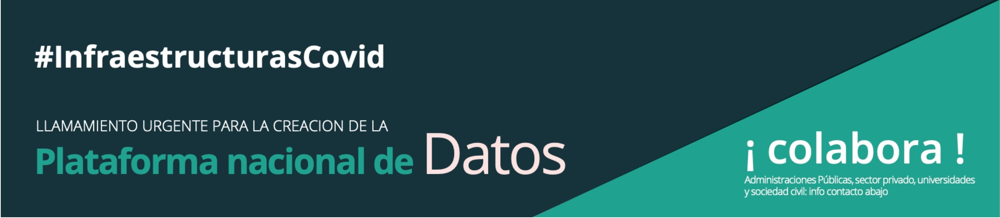

Llamamiento por el Acceso a Datos para la gestión de la movilidad y las infraestructuras críticas durante la crisis de la covid-19
Francisco A. Pérez
Doctor en Matemáticas
María Isabel Asensio Sevilla
Directora del Grupo de Investigación
SINUMCC 1
Universidad de Salamanca

El pasado 17 de marzo el Colegio de Ingenieros de Caminos de Madrid lanzó una iniciativa de colaboración (#InfraestructurasCovid) para asesorar en la toma de decisiones relacionadas con la gestión de la movilidad y las infraestructuras críticas. La comunidad cuenta ya con casi 300 profesionales voluntarios especializados en movilidad, infraestructuras, transporte y otros sectores afines (sanidad, ingeniería, arquitectura técnica, empresas operadoras, financiación, relaciones internacionales, etc.) tanto del ámbito privado como del público. Todos estos profesionales colaboran de forma altruista para apoyar en la toma de decisiones con conocimiento especializado y su experiencia en proyectos.
Estamos viviendo una crisis sin precedentes que requiere una respuesta coordinada y decisiones informadas. En este sentido, el acceso a datos fiables y de calidad es una condición imprescindible para poder producir un conocimiento preciso y riguroso de cada problemática y una acción efectiva. Nuestros sistemas de transporte y la gestión de la movilidad (centros hospitalarios, servicios urbanos, centros educativos, logística, edificación, etc.) representan un frente estratégico en la lucha contra la propagación del virus. Necesitamos entender mejor los patrones de movilidad e identificar las vulnerabilidades del sistema en relación con la salud pública. Necesitamos datos fáciles de encontrar, fiables, en detalle y con mayor precisión temporal y espacial. Sin estas variables será casi imposible crear modelos realistas ni diseñar planes eficaces basados en dichos modelos. La crisis ha revelado además la brecha tecnológica y de capacidades en los diferentes territorios, lo que hace aún más necesario un ecosistema de colaboración científica y técnica que disponga del acceso a los datos.
Para ello, nuestra comunidad ha lanzado un llamamiento para que el Gobierno coordine una acción de acceso a datos de ámbito nacional. #InfraestructurasCovid ha creado diferentes grupos de trabajo especializados en función de las necesidades actuales. Así, por ejemplo, la comunidad ha publicado guías para orientar a los responsables en la realización de pruebas masivas en parkings o la transformación de espacios como hoteles en infraestructuras sanitarias. El grupo de trabajo de Acceso a Datos está creando una red informal de colaboración científica con algunas universidades públicas y privadas para elaborar una guía de acceso a datos de ámbito nacional que permita trasladar al Gobierno los requerimientos de los investigadores en materia de datos. Otros países, como el Reino Unido, han coordinado con los teleoperadores una única plataforma en la que se facilita un acceso restringido a datos para grupos de investigación que sirven para el ajuste de modelos de predicción.
Si está interesado en obtener más información, por favor, póngase en contacto: